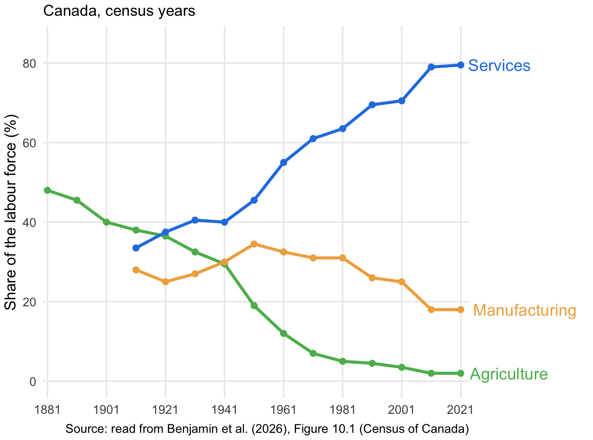
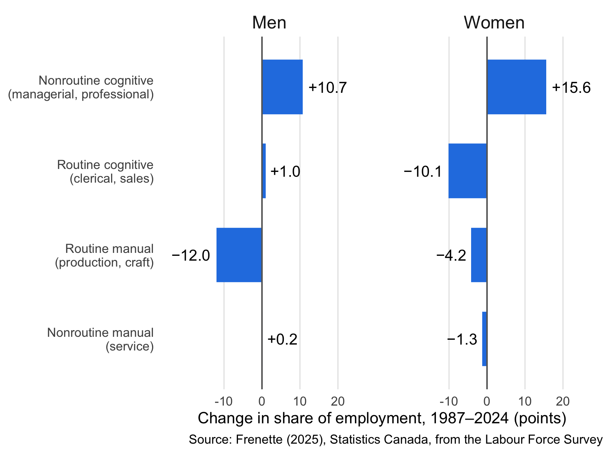

Labour Demand and Technology
EC306- Wages and Employment
Justin Smith
Wilfrid Laurier University
Fall 2026

Goals of This Section
Goals of This Section
In this section we will:
- Explain how technology moved Canadian jobs from farms to factories to services
- Show why cheaper capital can raise demand for some workers and lower it for others
- Compare two explanations for changing wages: skill-biased technological change, and computers replacing routine tasks
- Weigh the early evidence on broadband, robots, gig platforms and AI
Introduction
Technology Works Mainly Through Demand
- Technology changes labour supply too: home appliances, the pill (Chapter 6), online job search
- But the biggest effects come through labour demand: technology changes which jobs exist and how they are done
- Some jobs disappear: streetlamp lighters, switchboard operators, typists
- New ones appear: drone operators, virtual reality designers
- The gains are broad, but the costs land on the workers who are displaced
- Three questions for today:
- When capital gets cheaper, does every worker lose?
- What did computers do to wages?
- Will AI be different?
Technology and the Jobs We Do
From Farms to Factories to Offices
- 1881: about half of all workers were in farming, forestry or fishing
- 1921 to 1951: industrialization. Manufacturing peaks at about a third of jobs
- Since about 1980: deindustrialization, as services grow
- 2021: 2% in agriculture, 18% in manufacturing, about 80% in services
- We don’t eat less food or buy fewer goods than in 1881. So how do so few workers make them?
Technology Drives Structural Transformation
Key Definition
Structural transformation: the shift of employment from agriculture to manufacturing to services as an economy grows
- The same sequence shows up in country after country, and the main driver is technological progress
- In Chapter 8 terms:
- Better equipment and methods raise the output of each hour of farm work, \(MPP_N\)
- But food demand is inelastic: people don’t eat much more when food is cheaper, so its price \(p\) falls by more than output per hour rises
- So \(MRP_N = p \times MPP_N\) falls: farm labour demand shifts left and labour moves to sectors with higher MRP
- Cheap electricity did the same for the move from farms to factories
- Technology also drives long-run growth in output per worker, and it responds to incentives to invest in education and R&D
- Schumpeter’s creative destruction: growth for the economy, growing pains for workers whose skills are left behind
Capital–Labour Substitution
When Capital Gets Cheaper: Two Inputs
- Same model as Chapter 8: one type of labour \(N\), capital \(K\), isoquants and isocost lines
- New technology lowers the price of capital, \(r\). That raises \(W/r\), just as a wage increase does, so the isocost lines get steeper
- Substitution effect: at the same output, the firm uses more capital and less labour. Conditional labour demand always falls
- Scale effect: cheaper capital lowers marginal cost, so the firm produces more and hires more
- With a wage increase, both effects cut labour. Here they pull in opposite directions
- Net effect on labour:
- Falls if capital substitutes easily for labour and product demand is inelastic
- Rises if the scale effect is big enough
- The catch: with only one kind of labour, the technology hits every worker the same way
Adding a Second Type of Labour
- Production now uses capital and two kinds of labour, high-skilled and low-skilled: \(Q = F(K, N_H, N_L)\)
- When \(r\) falls, the firm uses more capital. To hold output fixed it must use less of at least one type of labour, but not necessarily both
Key Definitions
p-substitute for capital: an input whose conditional demand falls when the price of capital falls
p-complement for capital: an input whose conditional demand rises when the price of capital falls
- With only two inputs, capital and labour are always p-substitutes
- Rule of thumb: if the new capital makes a group more productive, that group tends to be a p-complement (an engineer with advanced machinery). If the capital does their work, a p-substitute (a manual labourer)
Cheaper Capital Creates Winners and Losers
| When \(r\) falls | Substitution effect | Scale effect | Net effect |
|---|---|---|---|
| Capital, \(K\) | ↑ | ↑ | ↑ |
| High-skilled, \(N_H\) (p-complement) | ↑ | ↑ | ↑ for sure |
| Low-skilled, \(N_L\) (p-substitute) | ↓ | ↑ | often ↓ |
- The scale effect raises demand for every normal input
- For a p-complement it reinforces the substitution effect
- For a p-substitute it pushes the other way, so demand can go either way, and often falls
- Technology has distributional effects: who gains depends on whether a group complements or substitutes for the new capital
- A robot that assembles car parts replaces assembly-line workers but raises demand for the technicians who run and maintain it
iClicker Question
Self-checkout machines get cheaper. A grocery chain uses capital, cashiers, and technicians who install and maintain the machines. Cashiers are p-substitutes for capital and technicians are p-complements. The chain’s demand for cashiers:
A) Falls for certain, because cashiers are p-substitutes for capital
B) Rises for certain, because cheaper capital lowers costs and the chain sells more
C) Could rise or fall, and is more likely to fall the less shoppers respond to lower grocery prices
D) Could rise or fall, and is more likely to fall the more shoppers respond to lower grocery prices
E) Doesn’t change, because cashiers’ wage hasn’t changed
Empirical Evidence
Why Did Wage Inequality Rise?
- In the 1980s and 1990s the US wage structure widened: young and less-educated workers, who already earned the least, saw the slowest wage growth
- Canada saw the same pattern, but weaker
- Supply can’t explain it: the share of workers with college or university credentials kept rising. On its own, that would have narrowed the gap
- So the relative demand for more-educated workers must have risen. Why?
- Trade? Imports mostly compete with goods made by less-skilled workers, so more trade could cut the demand for them
- But inequality rose even in sectors that faced no import competition
- Something else was going on
Skill-Biased Technological Change
Key Definition
Skill-biased technological change (SBTC): new technology that raises the demand for skilled workers more than for less-skilled workers. The skilled were already paid more, so wage gaps widen
- The evidence: capital and workers with a postsecondary education are p-complements. Capital and less-educated workers are p-substitutes
- Capital is easier to substitute for less-skilled labour, and skilled workers are needed to run the new capital
- Wage gaps widened most where personal computers spread fastest, across industries and across firms within the same industry
- A warning: workers who use computers earn 10 to 15% more, but workers who use pencils earn nearly as large a premium, so much of the gap reflects who gets a computer, not what it does. Following the same workers as they start using a computer shows a real effect, but a smaller one
iClicker Question
A survey finds that workers who use spreadsheet software at work earn 12% more than otherwise similar workers who don’t. Workers who use a desk phone earn 11% more than otherwise similar workers who don’t. What’s the best conclusion?
A) Spreadsheets raise productivity by about 12%
B) Spreadsheets and desk phones both raise productivity by about the same amount
C) Much of the spreadsheet premium likely reflects who uses spreadsheets, not what spreadsheets do
D) Spreadsheets have no effect on productivity
E) The true effect of spreadsheets is about 1%, the difference between the two premiums
Job Polarization: The Disappearing Middle
Key Definition
Job polarization: employment grows at the top and the bottom of the skill and wage distribution while the middle shrinks
- From the 1990s into the 2000s, jobs in the middle are the ones being lost
- Top, growing: managers and executives, doctors, nurses, engineers, lawyers, software developers
- Middle, shrinking: data-entry clerks, cashiers, receptionists, assembly-line workers, telemarketers
- Bottom, growing: janitors and cleaners, home health aides, security guards, child care and food service workers
- Wages polarized too
- SBTC predicts that the bottom loses the most. Here the middle loses the most. Why?
Computers Replace Routine Tasks
| Routine | Nonroutine | |
|---|---|---|
| Cognitive | Bank tellers, bookkeepers, data entry | Managers, engineers, analysts |
| Manual | Machine operators, assembly-line work | Janitors, home health aides, food service |
- Computers are good at routine tasks, which follow a fixed set of rules. These are mostly middle-skill jobs, so they are most at risk
- Computers are poor at nonroutine tasks:
- Cognitive: problem-solving, creativity and managing people, mostly in high-skill jobs
- Manual: flexible, in-person work that needs physical presence or emotional intelligence, mostly in low-skill jobs
- SBTC sorts workers by education. The routine-task explanation sorts jobs by task, which is why the middle shrinks
- Industries that computerized most shifted most from routine to nonroutine work, at every education level
iClicker Question
Which of these jobs is most exposed to replacement by computers that follow programmed rules?
A) Payroll clerk who calculates pay from timesheets
B) Plumber who repairs leaks in older homes
C) Physiotherapist
D) Personal support worker in a long-term care home
E) Marketing manager
Polarization in Canada Is Milder

- Shrinking: routine jobs. Production and craft jobs for men, clerical and sales jobs for women
- Growing: managerial, professional and technical jobs, for both
- Flat: service jobs at the bottom didn’t grow, unlike in the US
- The middle shrank, but the bottom didn’t fill in
- Oil and gas jobs may have absorbed displaced routine workers, and minimum wages rose (Green & Sand 2015)
Emerging Technologies
Automate or Augment?
- A new technology does one of two things to a task:
- Automate: do it instead of a person, substituting for labour
- Augment: help a person do it better, complementing labour
- Computers were skill-biased and polarizing. The next technologies need not be
- The fear that machines will make people obsolete is old
- The Luddites smashed textile machinery in the early 1800s
- Keynes (1930) predicted “technological unemployment”
- Four technologies where the evidence has started to come in: broadband internet, robots, gig platforms, and AI
Broadband Internet
- The PC started the information technology revolution in the 1980s. From the mid-1990s, the internet drove it
- Broadband is a general-purpose technology with high fixed costs, which is why governments help pay for it
- In 2021 Ontario committed $4 billion to bring high-speed internet to underserved areas
- Is it skill-biased? Norway rolled out broadband gradually from 2001 to 2007, so firms in some towns got it years before firms in others
- Comparing the two:
- Skilled workers became more productive, especially at abstract, nonroutine tasks like problem-solving and complex communication
- Unskilled workers became less productive, as broadband took over their routine tasks
- Like computers before it, broadband is skill-biased
Robots
- Robots automate physical tasks. Once confined to car plants, they now pick orders in warehouses, assist in surgery, plant and harvest crops, and drive taxis
- The evidence is mixed:
- 17 countries, 1993–2007: productivity rose and total employment barely changed, but low-skilled workers’ share of hours fell. Skill-biased, not polarizing
- US local labour markets, 1990–2007: places more exposed to robots had lower employment and wages
- US patents, 1976–2014: automation raised local employment overall, because new service jobs outnumbered lost routine manufacturing jobs
- Workers whose tasks robots take over are p-substitutes: they gain only if the scale effect wins. Those who run the robots are p-complements and gain for sure
Gig Work
Key Definition
Gig economy: paid work outside a standard long-term employment contract, usually paid per task, where workers choose when and how much to work
- Online platforms made gig work easy to find: Uber and Lyft, Uber Eats and SkipTheDishes, Amazon Mechanical Turk and TaskRabbit
- Platforms don’t automate or augment tasks. They change how work is organized: they make it cheap to match workers to customers task by task, without an employment contract
- Concern: firms can call workers contractors to avoid payroll taxes, minimum wages, benefits, severance and unions
- In June 2024 the federal government introduced legislation putting the burden of proof on employers to show a worker is a contractor. BC and Ontario followed in 2024 and 2025
- Size: 5.5% of Canadian workers in 2005 and 8.2% in 2016, counting all freelancers in tax data. Platform work alone is only about 0.5%
- Upside: flexibility, which is especially valuable for parents
- Workers also supply the capital, like a driver’s own car: the quasi-fixed costs from Chapter 8
AI Can Do Nonroutine Tasks
Key Definition
Artificial intelligence (AI): a general-purpose automation technology that learns to perform tasks, including nonroutine ones, rather than only following rules it is given
- Computers follow explicit rules, so they took over routine tasks
- AI can learn tacit knowledge: know-how that is hard to write down as rules
- Few children can explain how they ride a bicycle. They learn by doing, and AI learns in a similar way
- That lets AI make decisions that used to need a human expert
- So a much larger set of jobs is exposed, including cognitive jobs that survived computers
- Pessimists expect mass joblessness. Optimists expect AI to replace the boring jobs and make the ones that remain more interesting
Early Evidence on AI
- US job postings:
- Firms more exposed to AI cut hiring for non-AI jobs: AI substitutes for some tasks, and the scale effect isn’t big enough to make up for it
- Firms hiring for AI skills also pay their non-AI workers more, a sign of complementarity
- Hospitals have been slow to adopt AI
- Customer service agents given an AI assistant: 15% more issues resolved per hour, with the biggest gains for less experienced, lower-skilled agents. That’s the opposite of SBTC
- Too early to tell:
- Most of today’s jobs are new jobs created by past technology, not jobs that escaped automation
- Canada’s bigger worry right now is a labour shortage as the population ages, not a surplus
iClicker Question
A tax-preparation firm gives its staff an AI assistant. Experienced preparers’ output barely changes, while new hires’ output rises 30%. If pay follows productivity, this suggests the tool:
A) Is skill-biased, like computers
B) Complements new hires’ work, and would narrow the pay gap between new and experienced preparers
C) Hollows out the middle, as computers did with routine jobs
D) Has no effect on pay gaps, since every preparer has it
E) Will lower new hires’ pay, because it now does part of their work
Summary
Summary
Technology and the jobs we do:
- Canada moved from farms to factories to services. Technology raised productivity and freed labour for uses where its MRP is higher
Capital–labour substitution:
- With one kind of labour, cheaper capital hits every worker the same way. With two, it raises demand for p-complements and can cut it for p-substitutes
Empirical evidence:
- Computers first looked skill-biased. Later evidence says they replace routine tasks and hollow out the middle. Canada’s polarization is milder
Emerging technologies:
- Broadband and robots look skill-biased, gig platforms add flexible work, and AI can do nonroutine tasks. So far the evidence doesn’t point to mass unemployment
References
- Acemoglu, D., Autor, D., Hazell, J., & Restrepo, P. (2022). Artificial intelligence and jobs: Evidence from online vacancies. Journal of Labor Economics, 40(S1), S293–S340.
- Acemoglu, D., & Restrepo, P. (2020). Robots and jobs: Evidence from US labor markets. Journal of Political Economy, 128(6), 2188–2244.
- Akerman, A., Gaarder, I., & Mogstad, M. (2015). The skill complementarity of broadband internet. Quarterly Journal of Economics, 130(4), 1781–1824.
- Alekseeva, L., Azar, J., Giné, M., Samila, S., & Taska, B. (2021). The demand for AI skills in the labor market. Labour Economics, 71, 102002.
- Atalay, E., Phongthiengtham, P., Sotelo, S., & Tannenbaum, D. (2018). New technologies and the labor market. Journal of Monetary Economics, 97, 48–67.
- Autor, D. (2024). Applying AI to rebuild middle class jobs. NBER Working Paper No. 32140.
- Autor, D. H., & Dorn, D. (2013). The growth of low-skill service jobs and the polarization of the US labor market. American Economic Review, 103(5), 1553–1597.
References (cont.)
- Autor, D. H., Katz, L. F., & Kearney, M. S. (2008). Trends in U.S. wage inequality: Revising the revisionists. Review of Economics and Statistics, 90(2), 300–323.
- Autor, D. H., Katz, L. F., & Krueger, A. B. (1998). Computing inequality: Have computers changed the labor market? Quarterly Journal of Economics, 113(4), 1169–1213.
- Autor, D. H., Levy, F., & Murnane, R. J. (2003). The skill content of recent technological change: An empirical exploration. Quarterly Journal of Economics, 118(4), 1279–1333.
- Bailey, M. J. (2006). More power to the pill: The impact of contraceptive freedom on women’s life cycle labor supply. Quarterly Journal of Economics, 121(1), 289–320.
- Beaudry, P., Doms, M., & Lewis, E. (2010). Should the personal computer be considered a technological revolution? Evidence from U.S. metropolitan areas. Journal of Political Economy, 118(5), 988–1036.
- Benjamin, D., Foley, K., Gunderson, M., Lemieux, T., Schirle, T., & Skuterud, M. (2026). Labour Market Economics, 2026 Release. McGraw Hill. Chapter 10.
- Berman, E., Bound, J., & Griliches, Z. (1994). Changes in the demand for skilled labor within U.S. manufacturing: Evidence from the Annual Survey of Manufactures. Quarterly Journal of Economics, 109(2), 367–397.
References (cont.)
- Borjas, G. J., Freeman, R. B., & Katz, L. F. (1997). How much do immigration and trade affect labor market outcomes? Brookings Papers on Economic Activity, 1997(1), 1–90.
- Brynjolfsson, E., Li, D., & Raymond, L. (2025). Generative AI at work. Quarterly Journal of Economics, 140(2), 889–942.
- Card, D., Kramarz, F., & Lemieux, T. (1999). Changes in the relative structure of wages and employment: A comparison of the United States, Canada, and France. Canadian Journal of Economics, 32(4), 843–877.
- DiNardo, J. E., & Pischke, J.-S. (1997). The returns to computer use revisited: Have pencils changed the wage structure too? Quarterly Journal of Economics, 112(1), 291–303.
- Dostie, B., Jayaraman, R., & Trépanier, M. (2010). What (if any) are the returns to computer use? Applied Economics, 42, 3903–3912.
- Frenette, M. (2025). The changing nature of work in Canada: 1987 to 2024. Economic and Social Reports, Statistics Canada Catalogue no. 36-28-0001.
- Gaggl, P., & Wright, G. C. (2017). A short-run view of what computers do: Evidence from a UK tax incentive. American Economic Journal: Applied Economics, 9(3), 262–294.
References (cont.)
- Goldfarb, A., Taska, B., & Teodoridis, F. (2020). Artificial intelligence in health care? Evidence from online job postings. AEA Papers and Proceedings, 110, 400–404.
- Goldin, C., & Katz, L. F. (2002). The power of the pill: Oral contraceptives and women’s career and marriage decisions. Journal of Political Economy, 110(4), 730–770.
- Goos, M., & Manning, A. (2007). Lousy and lovely jobs: The rising polarization of work in Britain. Review of Economics and Statistics, 89(1), 118–133.
- Goos, M., Manning, A., & Salomons, A. (2014). Explaining job polarization: Routine-biased technological change and offshoring. American Economic Review, 104(8), 2509–2526.
- Graetz, G., & Michaels, G. (2018). Robots at work. Review of Economics and Statistics, 100(5), 753–768.
- Green, D. A., & Sand, B. M. (2015). Has the Canadian labour market polarized? Canadian Journal of Economics, 48(2), 612–646.
- Greenwood, J., Seshadri, A., & Yorukoglu, M. (2005). Engines of liberation. Review of Economic Studies, 72(1), 109–133.
References (cont.)
- Hamermesh, D. S. (1993). Labor demand. Princeton University Press.
- Herrendorf, B., Rogerson, R., & Valentinyi, Á. (2014). Growth and structural transformation. In P. Aghion & S. N. Durlauf (Eds.), Handbook of economic growth (Vol. 2, pp. 855–941). Elsevier.
- Jeon, S.-H., Liu, H., & Ostrovsky, Y. (2021). Measuring the gig economy in Canada using administrative data. Canadian Journal of Economics, 54(4), 1638–1666.
- Johnson, G. E. (1997). Changes in earnings inequality: The role of demand shifts. Journal of Economic Perspectives, 11(2), 41–54.
- Katz, L. F., & Autor, D. H. (1999). Changes in the wage structure and earnings inequality. In O. Ashenfelter & D. Card (Eds.), Handbook of labor economics (Vol. 3A, pp. 1463–1555). Elsevier.
- Katz, L. F., & Krueger, A. B. (2019). The rise and nature of alternative work arrangements in the United States, 1995–2015. ILR Review, 72(2), 382–416.
- Keynes, J. M. (1930). Economic possibilities for our grandchildren. Reprinted in Essays in persuasion. Palgrave Macmillan.
References (cont.)
- Krueger, A. B. (1993). How computers have changed the wage structure: Evidence from microdata, 1984–1989. Quarterly Journal of Economics, 108(1), 33–60.
- Kuhn, P., & Skuterud, M. (2004). Internet job search and unemployment durations. American Economic Review, 94(1), 218–232.
- Lawrence, R. Z., & Slaughter, M. J. (1993). International trade and American wages in the 1980s: Giant sucking sound or small hiccup? Brookings Papers on Economic Activity: Microeconomics, 1993(2), 161–226.
- Lucas, R. E. (1988). On the mechanics of economic development. Journal of Monetary Economics, 22(1), 3–42.
- Mann, K., & Püttmann, L. (2023). Benign effects of automation: New evidence from patent texts. Review of Economics and Statistics, 105(3), 562–579.
- Marcusa, A. (2024, November 21). “Mundane intellectual labour is going to be replaced by artificial intelligence,” says ‘Godfather of AI’. Financial Post.
- Michaels, G., Natraj, A., & Van Reenen, J. (2014). Has ICT polarized skill demand? Evidence from eleven countries over twenty-five years. Review of Economics and Statistics, 96(1), 60–77.
References (cont.)
- Romer, P. M. (1994). The origins of endogenous growth. Journal of Economic Perspectives, 8(1), 3–22.
- Seidman, L. S. (1989). Complements and substitutes: The importance of minding p’s and q’s. Southern Economic Journal, 56(1), 183–190.
- Solow, R. M. (1956). A contribution to the theory of economic growth. Quarterly Journal of Economics, 70(1), 65–94.
- Statistics Canada. (2017). The sharing economy in Canada. The Daily, February 28.
- Sullivan, D., & von Wachter, T. (2009). Job displacement and mortality: An analysis using administrative data. Quarterly Journal of Economics, 124(3), 1265–1306.
- Wood, A. (1994). North-South trade, employment, and inequality. Clarendon Press.
- Zoghi, C., & Pabilonia, S. W. (2007). Which workers gain upon adopting a computer? Canadian Journal of Economics, 40(2), 423–444.